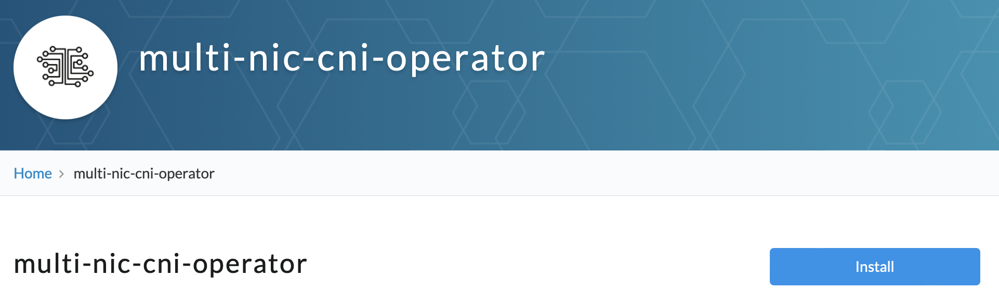
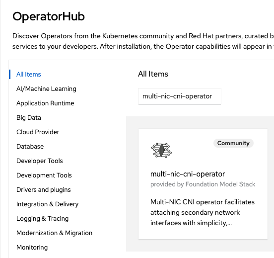
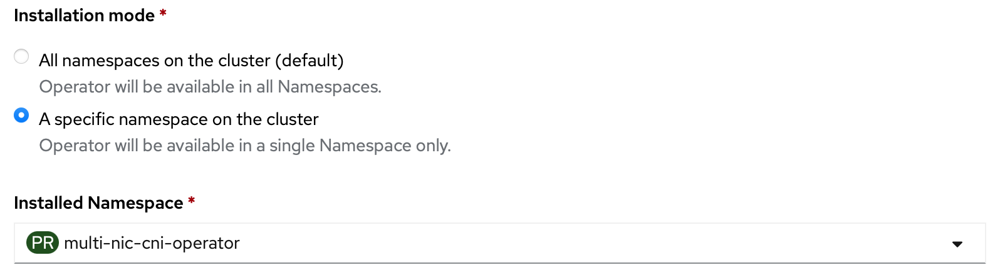

Installation
Requirements
- Secondary interfaces attached to worker nodes, check terraform script here.
- Secondary interfaces must have an IPv4 address assigned.
- Multus CNI installation; compatible with networkAttachmentDefinition and pod annotation in multus-cni v3.8
- For IPVLAN L3 CNI, the following configurations are additionally required
- enable allowing IP spoofing for each attached interface
- set security group to allow IPs in the target container subnet
- IPVLAN support (kernel version >= 4.2)
1. Install Operator
by OperatorHub
- Kubernetes with OLM:
- check multi-nic-cni-operator on OperatorHub.io 
- Openshift Container Platform:
- Search for
multi-nic-cni-operatorin OperatorHub 
- Search for
Recommended to deploy in the same default namespace for health check service, which is multi-nic-cni-operator.

(available version >= v1.0.5)
by manifests with kubectl
kubectl apply -f deploy/
by bundle with operator-sdk
operator-sdk run bundle ghcr.io/foundation-model-stack/multi-nic-cni-bundle:v1.0.5 -n multi-nic-cni-operator
2. Check if Cluster is Ready
-
Controller and multi-nicd daemon pods are running annd hostinterface are created.
> kubectl get po -n multi-nic-cni-operator NAME READY STATUS RESTARTS AGE multi-nic-cni-operator-controller-manager-6cbf4d57f9-zxx89 1/1 Running 0 40h multi-nicd-bgrvq 1/1 Running 0 40h multi-nicd-c4hdv 1/1 Running 0 40h multi-nicd-f2gkk 1/1 Running 0 40h ... > kubectl get hostinterfaces NAME AGE worker-node-1 40h worker-node-2 40h worker-node-3 40hIf multi-nicd is not running or hostinterface is not created, check this troubleshooting guide.
-
Secondary interfaces have been correctly detected.
# Please replace the host interface with your worker name. > kubectl get hostinterface worker-node-1 -oyaml apiVersion: multinic.fms.io/v1 kind: HostInterface metadata: name: worker-node-1 ... spec: hostName: worker-node-1 interfaces: - hostIP: 10.0.1.0 interfaceName: eth1 ...If secondary interface is not added, check this troubleshooting guide.
3. Deploy MultiNicNetwork resource
Common MultiNicNetwork
The following MultiNicNetwork is available for any Cloud infrastructure which meets the requirements.
MultiNicNetwork CR
# network.yaml
apiVersion: multinic.fms.io/v1
kind: MultiNicNetwork
metadata:
name: multi-nic-sample
spec:
subnet: "192.168.0.0/16"
ipam: |
{
"type": "multi-nic-ipam",
"hostBlock": 6,
"interfaceBlock": 2,
"vlanMode": "l3"
}
multiNICIPAM: true
plugin:
cniVersion: "0.3.0"
type: ipvlan
args:
mode: l3
attachPolicy:
strategy: none
namespaces:
- default
| Argument | Description | Value | Remarks |
|---|---|---|---|
| subnet | cluster-wide subnet for all hosts and pods | CIDR range | currently support only v4 |
| hostBlock | number of address bits for host indexing | int (n) | the number of assignable host = 2^n |
| ipam | ipam plugin config | string | ipam can be single-NIC IPAM (e.g., whereabouts, VPC-native IPAM) or multi-NIC IPAM (e.g., Multi-NIC IPAM Plugin) |
| multiNicIPAM | indicator of ipam type | bool | true if ipam returns multiple IPs from masters key of NetworkAttachmentDefinition config at once, false if ipam returns only single IP from static config in ipam block |
| plugin | main plugin config | NetConf + plugin-specific arguments | see supported CNI plugins for the list of supported CNI plugins and their arguments |
| attachPolicy | attachment policy | policy | strategy with corresponding arguments to select host NICs to be master of secondary interfaces on Pod |
| namespaces | list of namespaces to apply the network definitions (i.e., to create NetworkAttachmentDefinition resource) | []string | apply to all namespace if not specified. new item can be added to the list by kubectl edit to create new NetworkAttachmentDefinition. the created NetworkAttachmentDefinition must be deleted manually if needed. |
-
Prepare
network.yamlas shown in the example -
Deploy the network definition.
kubectl apply -f network.yamlAfter deployment, the operator will create NetworkAttachmentDefinition of Multus CNI from MultiNicNetwork as well as dependent resource such as SriovNetworkNodePolicy, SriovNetwork for sriov plugin.
Additional MultiNicNetwork for specific Cloud infrastructure
In addition to the common MultiNicNetwork with IPVLAN-L3, Multi-NIC CNI offers unique benefits tailored to each specific cloud infrastructure from v1.1.0, as shown below. Corresponding network options (MultiNicNetwork) for each infrastructure are listed accordingly.
Please check latest release.
| Multi-NIC CNI Features | IBM Cloud | Bare Metal | AWS | Azure (tentative) |
|---|---|---|---|---|
| Single definition for multiple attachments - dynamic interface discovery - policy-based NIC selection |
✓ | ✓ | ✓ | ✓ |
| CIDR/IP management | ✓ | * | * | ✓ |
| L3 Route configuration | ✓ | X | X | ✓ |
✓: beneficial
*: optional (e.g., replacable by whereabout, aws-vpc-cni IPAM)
X: non-beneficial as using L2
IBM Cloud, Azure
-
kubectl apply -f config/samples/multinicnetwork/ipvlanl3.yaml -
Mellanox Host Device with Host Device IPAM
kubectl apply -f config/samples/multinicnetwork/mellanox_hostdevice.yaml
BareMetal
-
kubectl apply -f config/samples/multinicnetwork/macvlan.yaml -
kubectl apply -f config/samples/multinicnetwork/macvlan_ipam.yaml -
IPVLAN L2 with whereabout IPAM
kubectl apply -f config/samples/multinicnetwork/ipvlanl2.yaml -
kubectl apply -f config/samples/multinicnetwork/sriov.yaml -
Mellanox Host Device with Host Device IPAM
kubectl apply -f config/samples/multinicnetwork/mellanox_hostdevice.yaml -
IPVLAN L2 with unmanaged HostInterface
kubectl apply -f config/samples/multinicnetwork/ipvlanl2_unmanaged.yamlAWS
-
IPVLAN L2 with AWS-VPC-connecting IPAM
kubectl apply -f config/samples/multinicnetwork/awsipvlan.yaml
-
4. Check if MultiNicNetwork is Ready
Get multinicnetwork's status:
> kubectl get multinicnetwork -oyaml
- apiVersion: multinic.fms.io/v1
kind: MultiNicNetwork
metadata:
...
name: multi-nic-cni-operator-ipvlanl3
spec:
...
status:
computeResults:
- netAddress: 10.241.130.0/24
numOfHosts: 3
configStatus: Success
discovery:
cidrProcessed: 3
existDaemon: 3
infoAvailable: 3
lastSyncTime: "2025-03-05T23:49:48Z"
message: ""
routeStatus: Success
- The
configStatusshould be "Success". discoveryshould show the number of available interfacesinfoAvailable.- If
multi-nic-ipamis specified in spec,computeResultsshould be added. - If
L3mode is used with IPVLAN,routeStatusshould be "Success".
5. Check Connection
By Script
see check connection.
By Health Checker Service
Deploy health check and agents to the cluster to serve a functional and connetion checking on-demand and periodically exporting to Prometheus metric server. See more detail.
Clean up
installed by manifests with kubectl
kubectl delete -f deploy/
installed by bundle with operator-sdk
operator-sdk cleanup multi-nic-cni-operator -n multi-nic-cni-operator